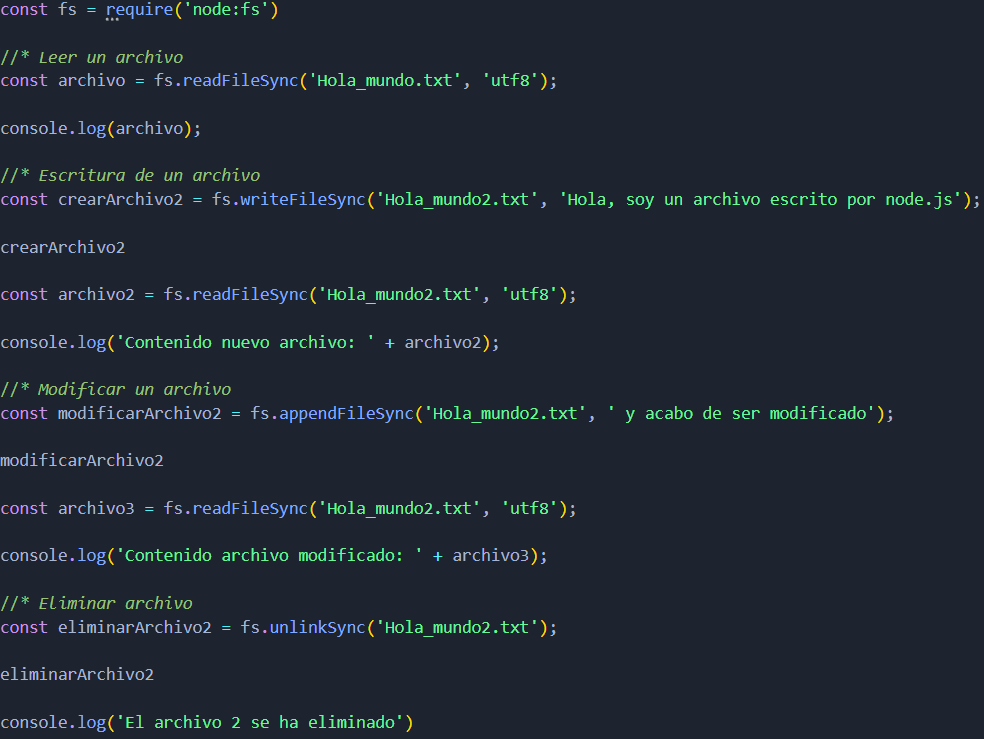

File System
Node js cuenta con un módulo centralizado, llamado File System (fs), diseñado específicamente para la manipulación de archivos.
Este módulo permite realizar operaciones como leer, escribir, actualizar y eliminar archivos.
Operaciones con File System
Opeaciones Síncronas
- fs.readFileSync():
- Lectura del contenido de archivos.
- fs.writeFileSync():
- Escritura de contenido de archivos.
- fs.appendFileSync():
- Añadir datos al final de un archivo.
- fs.unlinkSync():
- Eliminar un archivo.
Ejemplo:

Opeaciones Asíncronas
- fs.readFile():
- Lectura del contenido de archivos.
- fs.writeFile():
- Escritura de contenido de archivos.
- fs.appendFile():
- Añadir datos al final de un archivo.
- fs.unlink():
- Eliminar un archivo.
La principal diferencia con las operaciones síncronas es que las asíncronas se manejan mediante Callbacks, Promesas o Async/await.
Ejemplo con Async/await:
Se recomienda usar Promesas o Async/await y evitar el uso de Callbacks debido a que puede generarse un callback hell.
Lectura de directorios
El método readdir() es parte del módulo fs y se utiliza para leer el contenido de un directorio. Cuando se usa readdir(), se obtiene una lista de los nombres de los archivos y subdirectorios que se encuentran dentro de un directorio específico. Tambien tiene una versión síncrona (fs.readdirSync) y una versión asíncrona (fs.readdir).
El primer argumento es el directorio el cual se va a leer. Tambien tiene un argumento opcional que especifica opciones adicionales, como la codificación de los nombres de los archivos o si se quiere obtener objetos fs.Dirent que contienen metadatos adicionales sobre los archivos.
- withFileTypes: true:
- Si se especifica esta opción, los elementos en el array de archivos serán objetos fs.Dirent en lugar de solo los nombres de los archivos, lo que permite distinguir fácilmente entre archivos y directorios usando métodos como isDirectory() y isFile().
Ejemplo:
Obtener información de archivos
El método stat() se utiliza para obtener información sobre un archivo o un directorio. Esta información se presenta en un objeto de tipo fs.Stats, que contiene varios detalles sobre el archivo o directorio, como su tamaño, permisos, fecha de creación, y si es un archivo regular o un directorio.
Existen varias versiones de este método:
- Síncrona (fs.statSync):
- Bloquea la ejecución hasta que la operación se completa.
- Asíncrona (fs.stat):
- Utiliza un callback para manejar la respuesta
- Versión Promisificada (fs.promises.stat):
- Devuelve una promesa, permitiendo usar async/await.
Propiedades
- stats.isFile():
- Devuelve true si la ruta es un archivo.
- stats.isDirectory()
- Devuelve true si la ruta es un directorio.
- stats.size:
- Tamaño del archivo en bytes.
- stats.birthtime:
- Fecha de creación del archivo.
- stats.mtime:
- Fecha de la última modificación del archivo.
- stats.atime:
- Fecha de la última vez que el archivo fue accedido.
- stats.ctime:
- Fecha del último cambio en los metadatos del archivo.
Ejemplo: